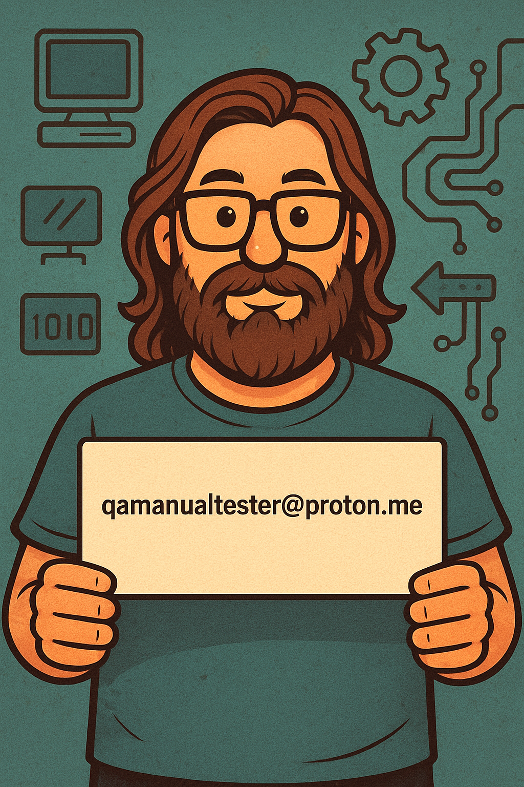

Vibe Coding Experiment
GitHubExperimental coding projects demonstrating creative problem-solving and exploration of testing methodologies. Showcasing unconventional approaches to quality assurance.
View Project →QA Specialist | Manual & Automation Testing
Quality is not an accident. It's the result of meticulous attention to detail, logical thinking, and relentless pursuit of perfection. I find what others miss, break what seems unbreakable, and ensure software works as intended—every single time.
With 6+ years of experience as a CCTV Operator, I've developed an exceptional eye for detail, pattern recognition, and the ability to identify anomalies that others overlook—skills that translate directly into finding critical bugs and ensuring software quality.
I approach software testing as an analytical challenge—a puzzle where every edge case matters, every user flow must be validated, and every bug is an opportunity to improve the product.
My background spans manual functional testing, automation frameworks, comprehensive documentation, and strategic quality assurance. I don't just execute test cases; I design testing strategies that uncover critical issues before they reach production.
Critical thinking, precision, and systematic problem-solving define my work. I communicate findings clearly, document thoroughly, and collaborate effectively with development teams to ensure quality isn't an afterthought—it's built in from the start.
Every pixel, every function, every edge case examined
Question assumptions, validate requirements, find gaps
Structured methodology for consistent, repeatable results
Comprehensive testing of web and mobile applications. Exploratory testing, regression testing, smoke testing, and user acceptance validation across platforms and devices.
Detailed test plans, test cases, test scenarios, and comprehensive test reports. Clear documentation that serves as a blueprint for quality and a reference for teams.
Precise bug identification, reproduction steps, severity assessment, and lifecycle management using Jira, Trello, Excel, and other tracking systems.
Interface consistency checks, usability evaluation, accessibility compliance (WCAG), cross-browser compatibility, and responsive design validation.
Test automation using Selenium, NUnit, and C#. Building maintainable test suites for regression testing, API validation, and continuous integration pipelines.
Case studies and project samples
Experimental coding projects demonstrating creative problem-solving and exploration of testing methodologies. Showcasing unconventional approaches to quality assurance.
View Project →Collection of professional certifications and training achievements in software testing, quality assurance, and automation frameworks.
View Certificates →Interactive portfolio showcasing various testing projects, methodologies, and case studies. Visual documentation of real-world QA implementations.
View Flipbook →Comprehensive manual testing project for academy-bg.com. Includes test cases, bug reports, test plans, and detailed functional testing documentation.
View Project →Automation testing suite using k6 for performance and load testing. Stress testing, spike testing, and performance benchmarking implementations.
View Repository →Automated unit testing implementation showcasing test-driven development practices, code coverage analysis, and integration with CI/CD pipelines.
View Repository →Leveraging AI tools for enhanced productivity
A nostalgic journey through the decade that shaped us
Step into a time machine crafted from brass gears and nostalgia. Whispers of The 90s is a love letter to the decade that gave us dial-up internet, mixtapes, and the birth of digital culture.
Through vintage photographs, forgotten memories, and the hum of cathode ray tubes, this book captures the essence of a generation caught between analog warmth and digital promise.
Author: Teodor Kostov
Copyright © 2025 Teodor Kostov. All rights reserved.
This original work represents a personal journey through the 90s, combining memoir, cultural commentary, and vintage photography. Every page reflects my lived experiences from that transformative decade.
Let's discuss your quality assurance needs
